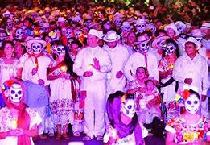
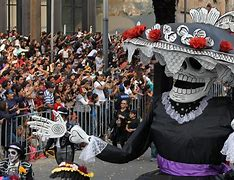
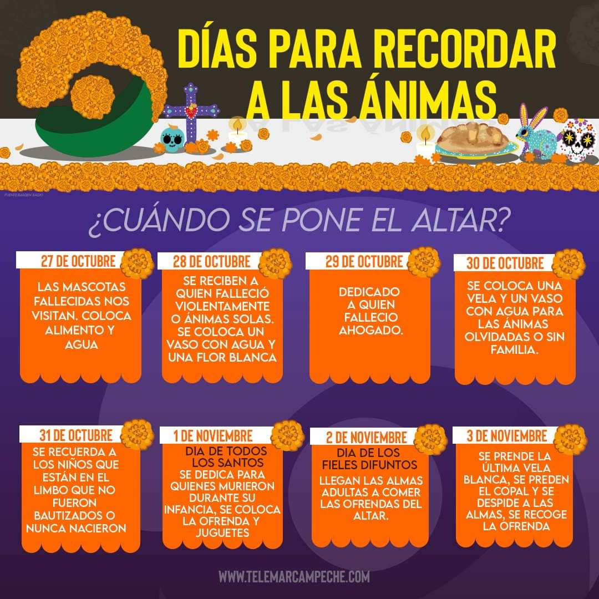
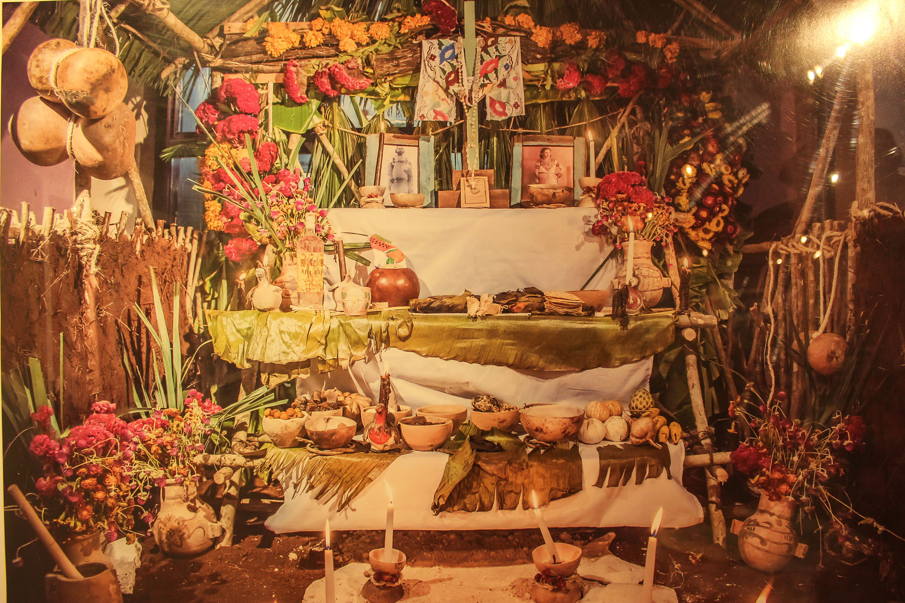

El hanal pixan en español significa "comida de las animas". Y es una tradición del pueblo maya que se lleva a cabo para
recordar de una manera especial a los amigos y parientes que se adelantaron en el viaje eterno. Es un acontecimiento especial
para los deudos de los difuntos, pues saben que, en estos días, del 31 de octubre al 2 de noviembre, las ánimas "reciben permiso"
para visitar a sus familiares.
El paseo de las animas
Al llegar el dia de los fieles difuntos en yucatan, se cree que durante la noche, las animas salen del sementerio
para iniciar su recorido del sementerio al hogar donde una ves vivieron hay. Y esiste una leyenda, la creencia señala
que no es recomendable caminar por las calles en las noches de las animas, porque podrias encontrarte con la procecion
de las animas puede tener consecuencias fatidicas, tampoco se deben hacer fiestas, porque podrian asustar alas animas y traer
espiritus malos. Pero si quieres acompañar a las animas a llegar a sus hogares tendrias que pintarte tu cara con una calabera
y yebar una vela para guiar alas animas y alumbrarles el camino, desde el cementerio general hasta el parque de San Juan.

donde se selebra
El hanal pixan se selebra en el sureste de mexico. Haunque en otros estados de la republica tanbien tienen esta tradicion de celebrar
alos muertos pero con otros nombres y tradicones por ejemplo "ciudad de mexico" hay se llama dia de los muertos y en los altares ponen
papel picado y pan del muerto, tambien ellos por el dia hacen desfiles con la catrina.

cuando se selebra
los dias son del 31 de octubre al 2 de noviembre. El 31 se selebran para las animas sin familia o animas olvidadas, el 1 de noviembre
se selebra para las animas de los niños, el 2 de noviembre son para las animas adultas. Algunos creen que se selebra antes como el dia 27
de octubre que creen que vienen las animas de las mascotas. Y los dias despues de eso hay para cada anima.

como se selebra y altar
El hanal pixan se selebra con un altar para el o los difuntos que vallas a poner si quieres ser un poquito mas tradicional tienes que
haserle una casita con palos medio gruesos: para el soporte de la casa, sogas:para hamarar los palos para que este firme la casa, hojas de
platano: para el techito, no importa si esta el altar dentro de la casa, con lo de la comida el pib, el pan de elote, atole, chocolate.
Tambien nesesitas la o las fotos de los difuntos, una crus verde, flores, la comida que mas le gustava al pariente o amigo, una crus echa
de petalos de flores rodiada de piedras y velas, un vaso con agua y 9 granos de elote secos y inciencio con su ahumador y carbon para purificar
la mesa.

comidas tradicionales
En el altar se ponen algunas comidas y bevidas como las comida faborita del difunto, el pib, el pan de elote, xec, si quieres el pan de muerto,
en lo de las bevidas atole de mais, agua, chocolate. El mucbipollo o pib es un tamal grande hecho de masa de harina de maíz y manteca, relleno
de carne de pollo y cerdo y col, y condimentado con tomate y chile. Esta torta de maíz se envuelve en hojas de plátano y se guisa en horno de leña, o mejor
aún, se prepara en el patio de la casa un hueco en la tierra, donde se ponen leña y piedras para cocinarlo a la manera tradicional: enterrado.
También entierran en el horno subterráneo, calabazas grandes, de preferencia la dzol, jícamas, camotes, mazorcas de maíz tierno (pibinales), y unas
tortas de masa y frijoles llamadas pibil-x’pelón. El xec es una mescla de sitricos como la toronja, la china, la mandarina, jicama, condimentado con limon,
sal y chile. Aqui un vide de como preparar el pib o mucbipollo.